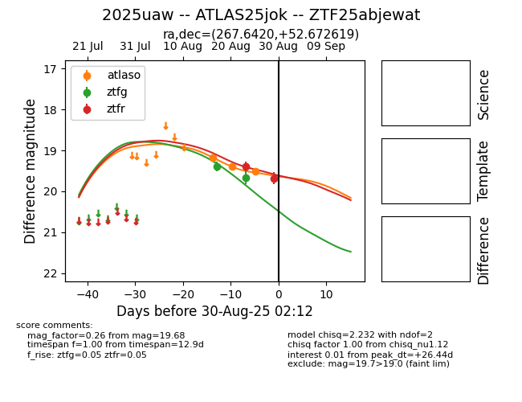

Target 2025uaw at 2025-08-27 06:32, see:
FINK: fink-portal.org/ZTF25abjewat
Lasair: lasair-ztf.lsst.ac.uk/objects/ZTF25abjewat
ALeRCE: alerce.online/object/ZTF25abjewat
TNS: wis-tns.org/object/2025uaw
YSE: ziggy.ucolick.org/yse/transient_detail/2025uaw
alt names
ZTF25abjewat (ztf,fink)
2025uaw (tns,yse)
ATLAS25jok (atlas)
coordinates:
equatorial (ra, dec) = (267.6420,+52.67262)
galactic (l, b) = (80.2794,+30.28111)
photometry
last atlaso=19.51, ztfg=19.67, ztfr=19.39
3 atlaso, 2 ztfg, 1 ztfr detections
